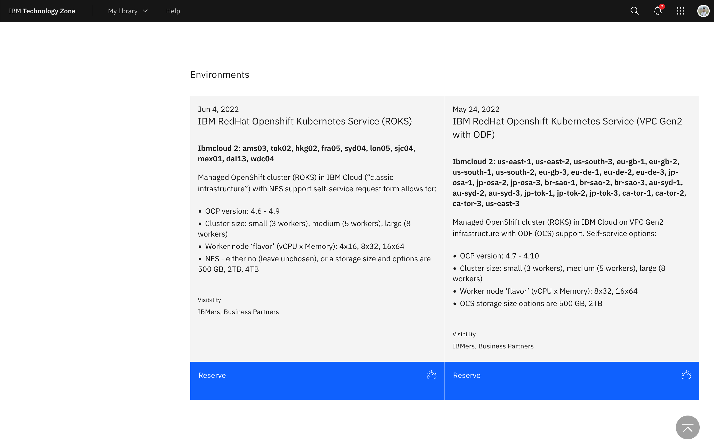
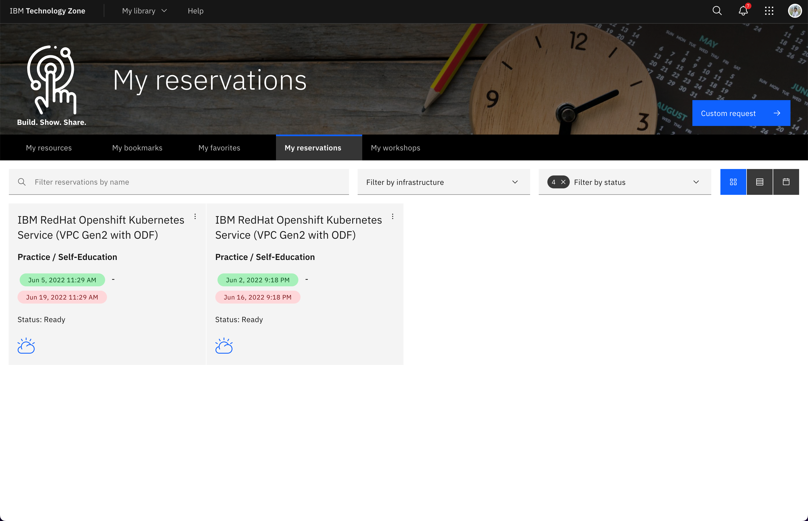
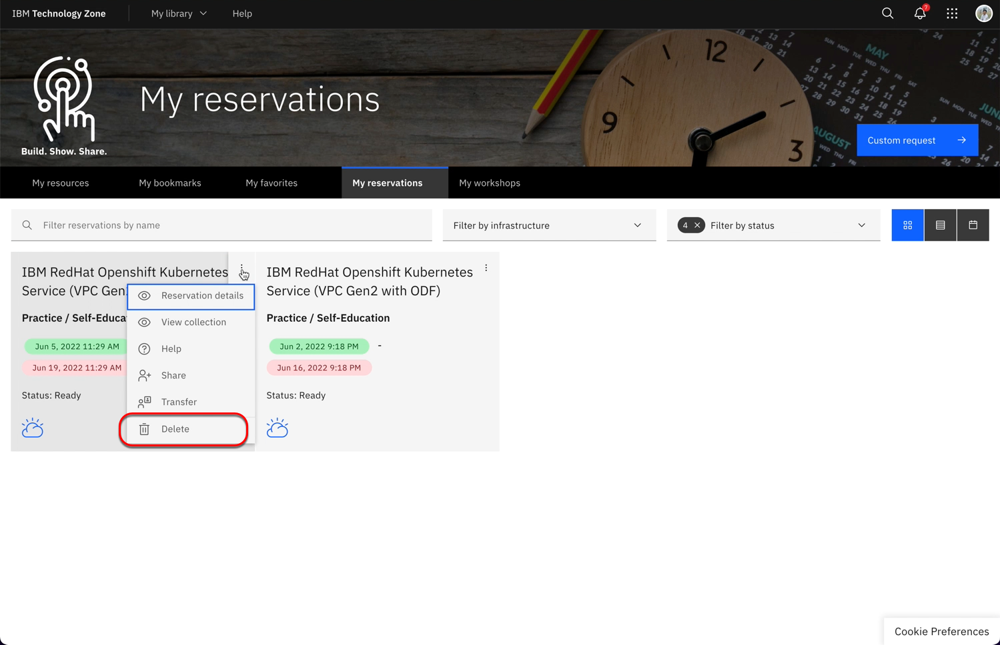
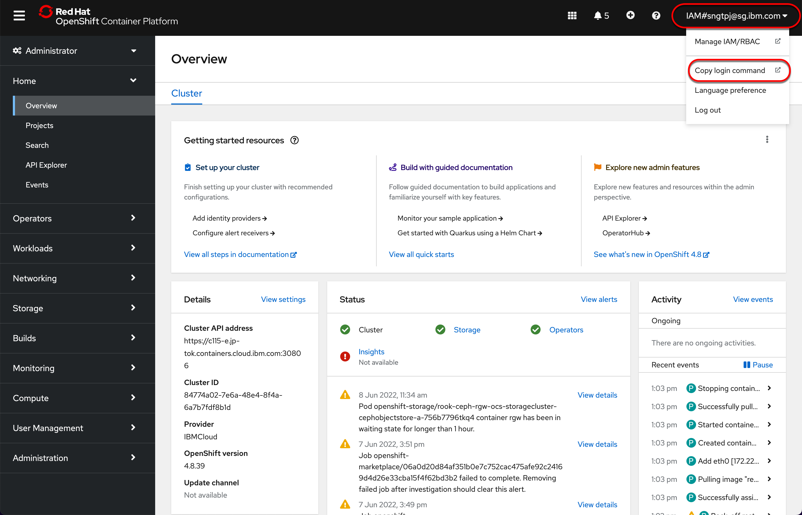
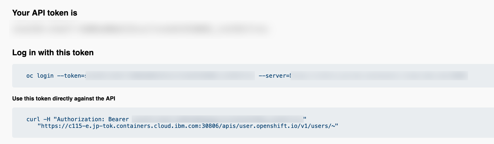

1. Red Hat OpenShift
IBMers and partners can request for Red Hat OpenShift Kubernetes Service (ROKS) from IBM Techzone.
1.1. Reserve an instance
You can reserve an instance of OpenShift for self enablement or POC, access to reserve your instance.
You can request custom Managed OpenShift clusters through the new self-service reservation form. Choose cluster size, flavor, and size by clicking reserve now.
Managed OpenShift cluster (ROKS) in IBM Cloud (“classic”) with NFS support.
Managed OpenShift cluster (ROKS) in IBM Cloud (VPC/”Gen2”) with OCS support.
To access the link above you need to have IBMid, to create an IBMid.
To reserve OpenShift Instance on IBM Cloud click on Reserve for ROKS on classics infrastructure or VPC.
You can view your reservation as shown below.
When you reservation is ready, an email will be sent to you with your OCP information on how you can access the cluster and also to add yourself as user to access the cluster in IBM Cloud.
You can delate your reservation as shown.
1.2. Pre-requisite
You need to install and ensure you have the following
1.3. Get OpenShift login token for use with oc
 Once you run the above oc login you will be able to use oc to managed the ocp cluster.
1.3.1. List projects in ocp
oc projects
1.3.2. List current project
oc project
1.3.3. List routes in current project
oc get routes
1.3.4. List storage class
oc get sc
NAME PROVISIONER RECLAIMPOLICY VOLUMEBINDINGMODE ALLOWVOLUMEEXPANSION AGE
ibmc-vpc-block-10iops-tier (default) vpc.block.csi.ibm.io Delete Immediate true 2d5h
ibmc-vpc-block-5iops-tier vpc.block.csi.ibm.io Delete Immediate true 2d5h
ibmc-vpc-block-custom vpc.block.csi.ibm.io Delete Immediate true 2d5h
ibmc-vpc-block-general-purpose vpc.block.csi.ibm.io Delete Immediate true 2d5h
ibmc-vpc-block-metro-10iops-tier vpc.block.csi.ibm.io Delete WaitForFirstConsumer true 2d5h
ibmc-vpc-block-metro-5iops-tier vpc.block.csi.ibm.io Delete WaitForFirstConsumer true 2d5h
ibmc-vpc-block-metro-custom vpc.block.csi.ibm.io Delete WaitForFirstConsumer true 2d5h
ibmc-vpc-block-metro-general-purpose vpc.block.csi.ibm.io Delete WaitForFirstConsumer true 2d5h
ibmc-vpc-block-metro-retain-10iops-tier vpc.block.csi.ibm.io Retain WaitForFirstConsumer true 2d5h
ibmc-vpc-block-metro-retain-5iops-tier vpc.block.csi.ibm.io Retain WaitForFirstConsumer true 2d5h
ibmc-vpc-block-metro-retain-custom vpc.block.csi.ibm.io Retain WaitForFirstConsumer true 2d5h
ibmc-vpc-block-metro-retain-general-purpose vpc.block.csi.ibm.io Retain WaitForFirstConsumer true 2d5h
ibmc-vpc-block-retain-10iops-tier vpc.block.csi.ibm.io Retain Immediate true 2d5h
ibmc-vpc-block-retain-5iops-tier vpc.block.csi.ibm.io Retain Immediate true 2d5h
ibmc-vpc-block-retain-custom vpc.block.csi.ibm.io Retain Immediate true 2d5h
ibmc-vpc-block-retain-general-purpose vpc.block.csi.ibm.io Retain Immediate true 2d5h
ibmc-vpcblock-odf-10iops vpc.block.csi.ibm.io Delete WaitForFirstConsumer true 2d5h
ibmc-vpcblock-odf-5iops vpc.block.csi.ibm.io Delete WaitForFirstConsumer true 2d5h
ibmc-vpcblock-odf-custom vpc.block.csi.ibm.io Delete WaitForFirstConsumer true 2d5h
ibmc-vpcblock-odf-general vpc.block.csi.ibm.io Delete WaitForFirstConsumer true 2d5h
ibmc-vpcblock-odf-ret-10iops vpc.block.csi.ibm.io Retain WaitForFirstConsumer true 2d5h
ibmc-vpcblock-odf-ret-5iops vpc.block.csi.ibm.io Retain WaitForFirstConsumer true 2d5h
ibmc-vpcblock-odf-ret-custom vpc.block.csi.ibm.io Retain WaitForFirstConsumer true 2d5h
ibmc-vpcblock-odf-ret-general vpc.block.csi.ibm.io Retain WaitForFirstConsumer true 2d5h
ocs-storagecluster-ceph-rbd openshift-storage.rbd.csi.ceph.com Delete Immediate true 2d5h
ocs-storagecluster-ceph-rgw openshift-storage.ceph.rook.io/bucket Delete Immediate false 2d5h
ocs-storagecluster-cephfs openshift-storage.cephfs.csi.ceph.com Delete Immediate true 2d5h
openshift-storage.noobaa.io openshift-storage.noobaa.io/obc Delete Immediate false 2d5h
1.3.5. List PVC
oc get pvc
NAME STATUS VOLUME CAPACITY ACCESS MODES STORAGECLASS AGE
pvc-etc-splunk-example-standalone-0 Bound pvc-7342f36a-d12b-494d-9e5c-cd53b2ab4cb1 10Gi RWO ibmc-vpc-block-10iops-tier 69m
pvc-var-splunk-example-standalone-0 Bound pvc-b9da3d79-bee9-48cf-928b-87d5105373db 100Gi RWO ibmc-vpc-block-10iops-tier 69m
1.3.6. List ReplicaSets
oc get ReplicaSets
NAME DESIRED CURRENT READY AGE
splunk-operator-7464457cd6 1 1 1 70m
1.3.7. List services
oc get services
NAME TYPE CLUSTER-IP EXTERNAL-IP PORT(S) AGE
splunk-example-standalone-headless ClusterIP None <none> 8000/TCP,8088/TCP,8089/TCP,9000/TCP,9997/TCP,17000/TCP,19000/TCP 68m
1.3.8. List configmaps
oc get configmaps
NAME DATA AGE
kube-root-ca.crt 1 70m
openshift-service-ca.crt 1 70m
splunk-operator-lock 0 69m
1.3.9. List Deployment
oc get deployments
NAME READY UP-TO-DATE AVAILABLE AGE
splunk-operator 1/1 1 1 68m
1.3.10. List secrets
oc get secrets
NAME TYPE DATA AGE
builder-dockercfg-8sxcw kubernetes.io/dockercfg 1 66m
builder-token-7w72r kubernetes.io/service-account-token 4 66m
builder-token-ngh6d kubernetes.io/service-account-token 4 66m
default-dockercfg-v5b5s kubernetes.io/dockercfg 1 66m
default-token-dbxvc kubernetes.io/service-account-token 4 66m
default-token-rrkwd kubernetes.io/service-account-token 4 66m
deployer-dockercfg-cr4x4 kubernetes.io/dockercfg 1 66m
deployer-token-bvm9p kubernetes.io/service-account-token 4 66m
deployer-token-kp9jj kubernetes.io/service-account-token 4 66m
splunk-example-standalone-secrets Opaque 6 63m
splunk-operator-dockercfg-hkwdz kubernetes.io/dockercfg 1 66m
splunk-operator-token-bhtlb kubernetes.io/service-account-token 4 66m
splunk-operator-token-j5xgp kubernetes.io/service-account-token 4 66m
1.3.11. List pods
oc get pods
NAME READY STATUS RESTARTS AGE
splunk-example-standalone-0 1/1 Running 0 61m
splunk-operator-7464457cd6-9sqw9 1/1 Running 0 64m
1.4. Resources
get started with OpenShift on IBM Cloud